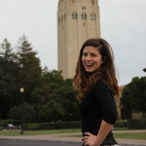

Meet McKenzie:

I'm an engineer, teacher, and recent Stanford graduate. I grew up as the only sister with four brothers
in a big family in Tennessee, and I graduated Stanford University with a degree in Economics and focus on
Computer Science.
After graduation, I moved to New York to work as a software engineer for J.P. Morgan Chase,
where I helped with projects in Asset Management as well as teaching financial literacy and computer basics
with initiatives like "Take Your Kids to Work" Day. I've been involved with Microsoft's TEALS program that
teaches computer science in New York City public schools and Girls Who Code. Through my involvement, I fell
in love with teaching, and I'm currently working as algebra teacher in New York City through Teach for America.
I love teaching students, because I enjoy working one on one with students to help them achieve their academic goals.
I have extensive experience teaching computer science and math, including Algebra 1 & 2, geometry, ACT/SAT math, and
introduction to programming.
I also love teaching and learning from my 12 year old brother, a current 7th grader. I completed my BA in Economics in 2016
from Stanford University. I am currently enrolled in a Computer Science Master's at New York University, starting spring 2018.
I specialized in computer science coursework at Stanford University, taking coursework in Android development, Java, C++, and Big
Data in college. I then worked at J.P. Morgan Chase as a software engineer using Ionic development for mobile, Qlikview, and completing
a work-sponsored computer science bootcamp in Java, CSS, HTML, and JavaScript for talented female developers.